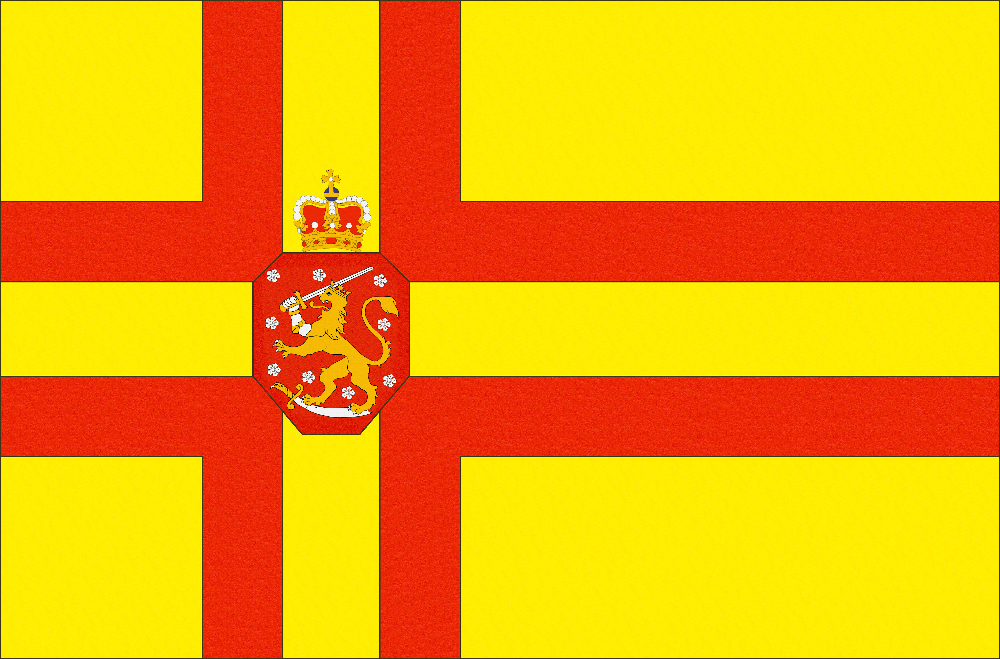
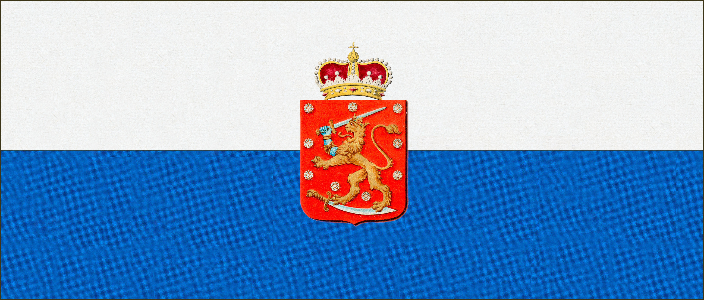
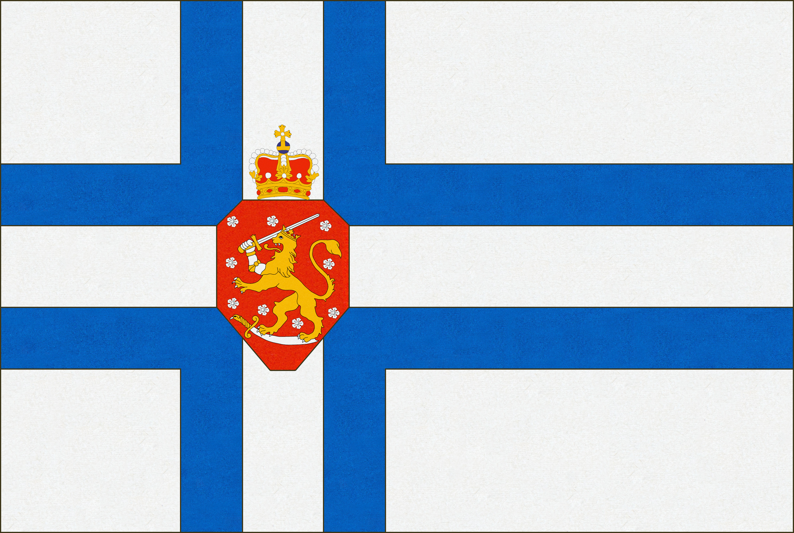
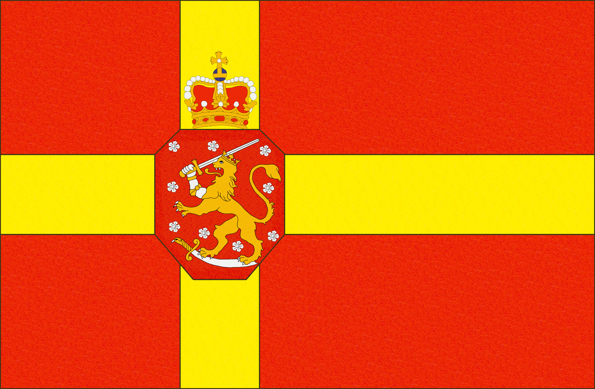
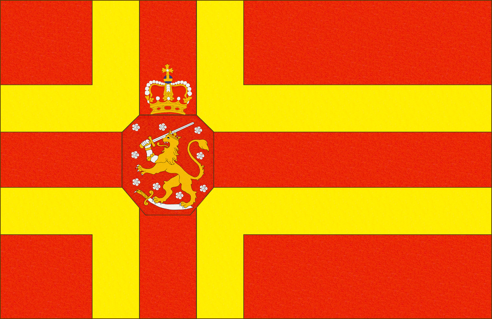

Etusivulle
Etusivulle
Vaikka vuoden 1863 valtiopäivillä Suomelle ei myönnetty lupaa omalle lipulle, se ei estänyt suomalaisia käyttämästä
erilaisia lippuja epävirallisesti maan symbolina. Kysymys lipun väristä muodostui kuitenkin kiivaan debatin kohteeksi.
Punakeltainen vai sinivalkoinen? Tämä ei ollut pelkästään estetiikasta kiinni, vaan kyseessä oli myös poliittinen
valinta. Svekomaanit ja ruotsinkieliset, jotka kannattivat Ruotsin ja Suomen yhteistä historiaa ja kulttuuria,
asettuivat punakeltaisen lipun taakse. Fennomaanit ja nuorsuomalaiset, jotka puolestaan kannattivat itsenäisempää suomalaista
kansallisidentiteettiä, olivat sinivalkoisen lipun kannalla.
Liput olivat yleensä ihmisten itse tekemiä ja
suunnittelemia. Niitä käytettiin enimmäkseen huviloissa, veneissä ja erilaisissa juhlatilaisuuksissa. Virallisissa
tilaisuuksissa näiden lippujen käyttö oli kuitenkin kielletty. Lippujen yleisimmät muodot olivat ristiliput
(sininen risti valkoisella tai punainen risti keltaisella pohjalla), raitaliput (monta vaakasuoraa kapeaa raitaa
päällekkäin) tai kaksiosaiset liput. Myös leijonaliput säilyivät suosittuina.
Ensimmäisten sortovuosien aikaan raitamalliset liput yleistyivät jossa joko punakeltaiset tai sinivalkoiset raidat
asetettiin lippuun vaakasuorassa. Näitä käytettiin etenkin kun leijonatunnuksia alettiin poistamaan virallisista
yhteyksistä (kuten postimerkeistä) ja leijonalipun käyttöä alettiin rajoittaa. Raitaliput ilman vaakunaa eivät joutuneet
yhtä helposti viranomaisten silmätikuksi. Toisen sortokauden aikaan, suurlakon ja Bobrikovin murhan jälkeen, leijona yleensä
lisättiin myös raitalippuihin mukaan.

Nimimerkki "von S." ehdotti Turun Sanomissa 07.11.1908
kompromissiratkaisuna sinivalkoista raitalippua leijonalla.

» Me nuorsuomalaiset olemme yleensä ottaneet päämääräksemme kulkea sitä kultaista keski tietä ja olla kaikkien yhdistäjinä. Meidän sopii tässäkin kulkea esimerkkinä. Jotta saataisiin yhteinen kansallis-lippu, niin ehdottaisin että yhdistettäisiin kaikki mainitsemani liput jotenka kaikki puolueet tulisivat yhteisen lipun alle. Ehdottaisin siis, että määrättäisiin sellainen kansallisuuslippu jossa on sinisiä ja valkoisia kapeita kaistoja sekä yläkulmaan punaista kangasta ja siihen Suomen leijona. Olen ollut tilaisuudessa näkemään sellaisia lippuja ja näyttävät ne hyvin kauskoilta ja komeilta. »
Ruovedellä sijaitsevalla Pekkalan kartanolla oli käytössä 1900-luvun vaihteessa ristilippu jossa keltapunaiset kaksoisristit
olivat keltaisella taustalla ja keskelle oli asetettu leijonavaakuna. Gallen-Kallela on mahdollisesti kyseisen lipun
suunnittelija. Hän, ja kartanon silloinen omistaja nuorsuomalainen valtiopäivämies Alexander Aminoff, olivat
nuoruudenystäviä ja Gallen-Kallela myös vietti kartanolla paljon aikaa. Lippu myös mahdollisesti inspiroi hänen
vuoden 1918 lippuluonnoksia.

Vuonna 1912, Aino Ackté järjesti Savonlinnassa ensimmäiset oopperajuhlat. Linnaa liputettiin juhlien aikana
valkoisella lipulla jonka keskellä oli leijonavaakuna. Yläkulmaan oli asetettu Venäjän lippu. Kaksi vuotta aikaisemmin,
viranomaiset olivat määränneet että vastaavanlaiset "orjamerkit" tuli laittaa suomalaisten pursiseurojen lippuihin.

Valtioneuvos E. N. Setälälle kuulunut lippu vuodelta 1897, jota käytettiin hänen Kallioniemen huvilalla.
Lipun mitat: 5x2m.

Kirjailija Santeri Ivalolle kuulunut lippu, jota käytettiin kevääseen 1918.

Ristilippu Paavolan kartanosta Ypäjältä sortokausien ajoilta, joka oli käytössä itsenäistymiseen asti.

Matssonin moottoriveneen lippu 1910-luvulta.

Tuntemattoman valmistama huvilalippu 1900-luvun alusta.

Tuntemattoman valmistama huvilalippu 1880-luvulta.

Tuntemattoman valmistama leijonalippu joka löytyi Berliinistä 1920-luvulla.

 Ylös
Ylös
{kind=link}